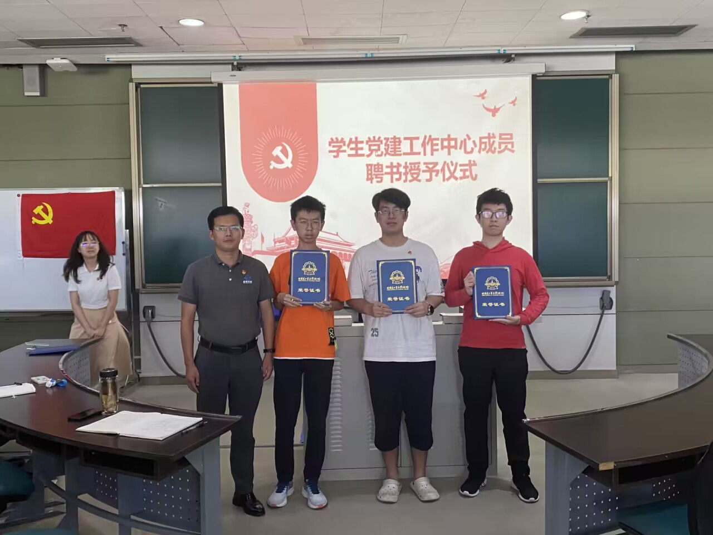
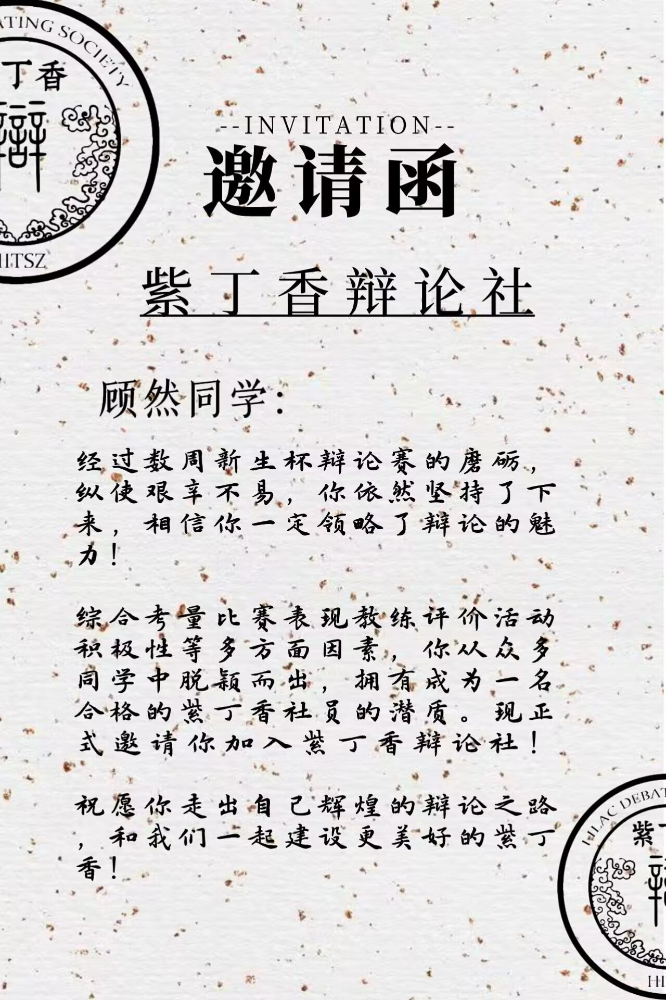

2024年3月初，E-park营答辩活动举行，顾然同学进行了深度学习赛道的项目汇报与结果总结。经过评委老师与学长的综合考虑后，顾然获得二等奖。
At the beginning of March 2024, the E-park Camp defense event was held, and Gu Ran gave a project presentation and summary of the results of the Deep Learning track. After a comprehensive consideration by the judges and seniors, Gu Ran was awarded the second prize.
2023年10月31日下午三时许，机电学院党委组织召开“党支部书记工作例会暨党支部书记培训会”。会议中授予顾然一份党建工作中心成员的任职聘书。
On the afternoon of October 31, 2023, the Party Committee of the School of Mechanical and Electrical Engineering organized a "Party Branch Secretary Work Meeting and Party Branch Secretary Training Meeting". During the meeting, appointments were given to members of the Party Building Work Center.
2023年10月中旬，机电学院开启2022-2023学年奖学金评选工作，顾然同学获得二等奖学金。
In mid-October 2023, the College of Electromechanics opened the selection of scholarships for the 2022-2023 academic year, and Gu Ran was awarded a second-class scholarship.
2022年8月初，在“新生杯”辩论赛结束后，顾然同学荣幸地收到了哈尔滨工业大学（深圳）紫丁香辩论社的邀请函。这是一个令人兴奋的时刻，顾然能够参加这个备受赞誉的辩论社团。
In early August 2022, after the "Freshman Cup" debate tournament, Gu Ran was honored to receive an invitation from the Lilac Debate Club of Harbin Institute of Technology (Shenzhen). It was an exciting time for Gu Ran to join this highly acclaimed debate club!
